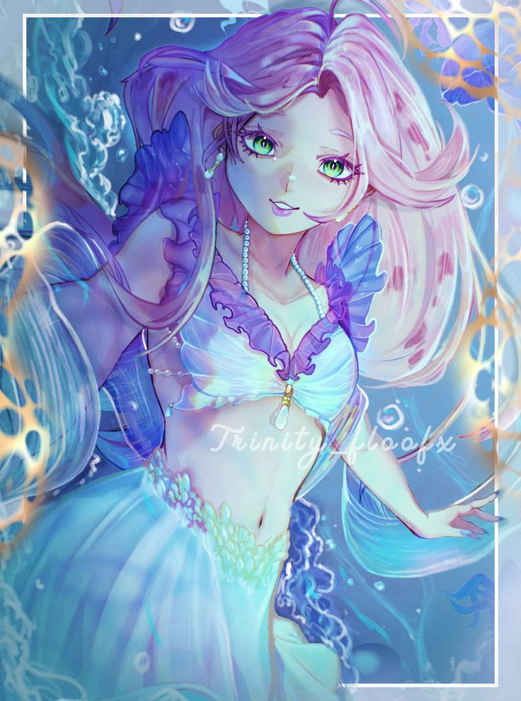
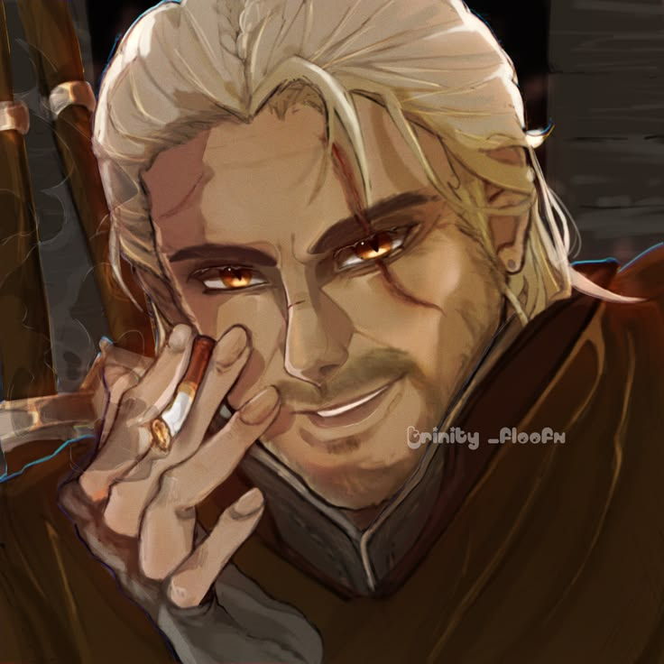
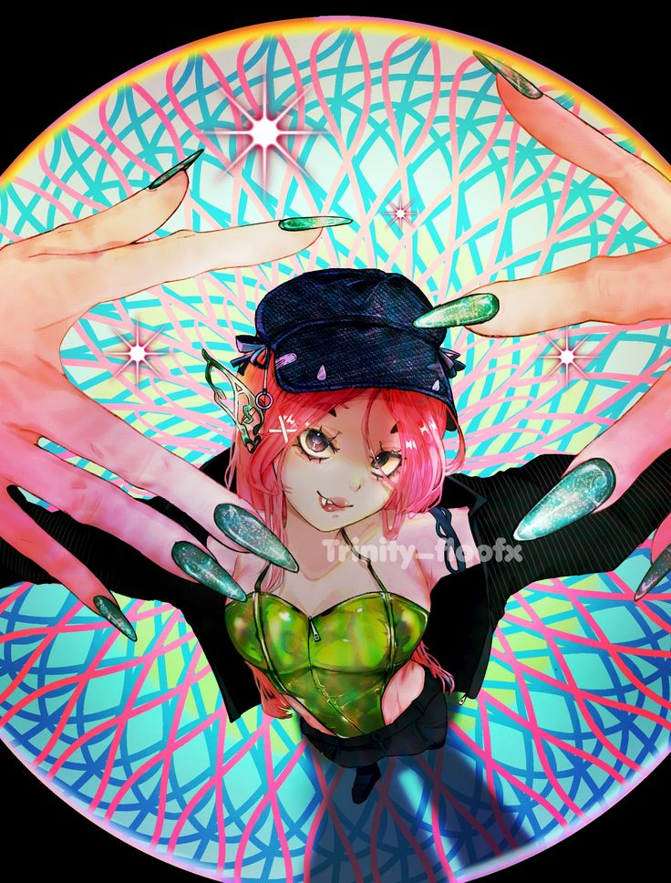
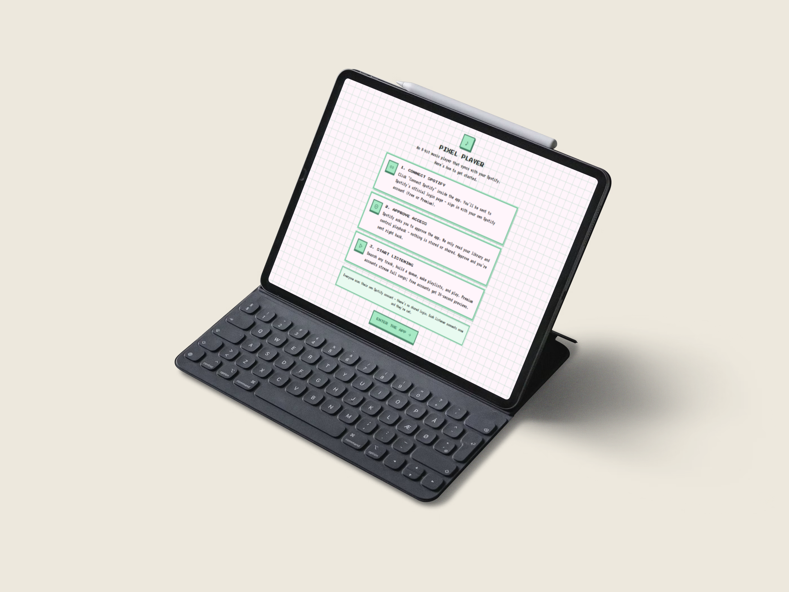
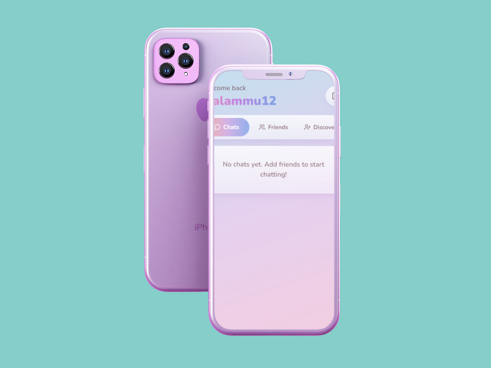

Artworks




Artworks made in the aesthetic style of Japanese anime art and traditional pencil art-style. These artworks integrate a sense of fashion, high aestheticism and Y2K-based colour themes.
Websites : Pixel-BEAT

Pixel-Beat: A cute little pixelated touch to add to your music listening experience by allowing you to make playlists, add or remove music from waiting list and finally, allow you to play a mini-game while enjoying your beats.
Websites : Interconnect

Interconnect: What if you had your own social media account that you could personalize on your own? Introducing Interconnect! Your personal social media app that lets you talk to your friends, create discussion pages, and more.